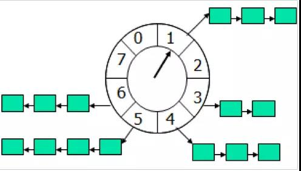

课设中涉及对过期需求的自动处理（自动设置状态为超时），其实日常生活中也有很多相类似的问题，比如订单签收后若买家没有确认收货则要在24小时后自动确认，或者QQ每到周一早上的一个固定时间就会给用户发送上周QQ空间的访客情况，老师要设置作业的截止日期，过期学生就不能使用提交作业的功能。
其实个人总结了一下大致可以分为两类任务，一类属于延时任务，比如订单的24小时自动确认收货，另一类属于定时任务，比如在某个特定的时间给用户发送报告，课设中的任务其实就是一个定时任务，而类似的问题其实在个人课设中也有出现。
不过不同的是个人课设中的选课时间功能完全可以简化处理，即在学生进行选课操作时检查当前时间与规定时间，并对超时请求进行拦截以达到显示超时的目的。但此次团体课设则不同，此次团体课设要求检查的是截止日期是否超时，并对超时的需求执行对应的操作，主要考虑到高效性与实效性，并不能简单地通过前端请求进行拦截。
基于此，我设计了三种方案，三种方案优缺点各异，但在横向与纵向的比较之中带给了我很大的启发。
数据库轮询
第一种是对数据库进行定期轮询，即通过一个线程定时的去扫描数据库，通过当前时间来判断是否有超时的需求，然后进行相关操作。代码如下：
1
2
3
4
5
6
7
8
9
10
11
12
13
14
15
16
17
18
19
20
21
22
23
24
25
26
27
28
29
30
31
32
33
34
35
36
37
38
39
40
41
42
43
44
45
46
47
48
49
50
51
52
53
54
55
56
57
58
59
60
61
62
63
64
65
66
67
68
69
70
71
72
73
74
75
76
77
78
79
80
81
82
83
84
85
86
87
88
89
90
91
| package com.wzt.tapm.util;
import com.alibaba.fastjson.JSON;
import com.alibaba.fastjson.JSONArray;
import com.alibaba.fastjson.JSONObject;
import okhttp3.*;
import java.io.IOException;
import java.text.SimpleDateFormat;
import java.util.Date;
public class AutoTimeOutStarter {
private static final String BASE_URL = "http://localhost:8081";
private static JSONArray data ;
private static final HttpUtil httpUtil = new HttpUtil();
public static void main(String[] args) {
Callback updateListCallback = new Callback() {
@Override
public void onResponse(Call call, Response response) throws IOException {
if (response.body() != null){
String responseData = response.body().string();
JSONObject object = JSON.parseObject(responseData);
data = object.getJSONArray("data");
if (data.size()>0){
SimpleDateFormat sdf = new SimpleDateFormat();
sdf.applyPattern("yyyy-MM-dd");
Date date = new Date();
String DayNow = sdf.format(date);
for (int i = 0; i < data.size(); i++) {
JSONObject jsonObject = data.getJSONObject(i);
String ddl = jsonObject.getString("ddl");
if (ddl.compareTo(DayNow) < 0){
String status = jsonObject.getString("status");
FormBody formBody;
if (status.equals("2")){
formBody = new FormBody.Builder()
.add("demand_id",jsonObject.getString("demand_id"))
.add("commit","需求已超时")
.build();
timeOutFrom2To6(formBody);
}
if (status.equals("4")){
formBody = new FormBody.Builder()
.add("demand_id",jsonObject.getString("demand_id"))
.add("commit","需求已超时")
.build();
timeOutFrom4To6(formBody);
}
}
}
}
}
}
@Override
public void onFailure(Call call, IOException e) {
e.printStackTrace();
}
};
Thread t = new Thread(() ->{
while (true) {
updateList(updateListCallback);
try {
Thread.sleep(86400*1000);
} catch (InterruptedException e) {
e.printStackTrace();
}
}
});
t.start();
}
private static void updateList(Callback updateListCallback){
FormBody formBody = new FormBody.Builder().build();
httpUtil.OKHttpWithCallBack(false,BASE_URL+"/getDemandDdlData", updateListCallback,formBody);
}
private static void timeOutFrom2To6(FormBody formBody){
httpUtil.OKHttpWithoutCallBack(false,BASE_URL+"/demand/from2to6",formBody);
}
private static void timeOutFrom4To6(FormBody formBody){
httpUtil.OKHttpWithoutCallBack(false,BASE_URL+"/demand/from4to6",formBody);
}
}
|
其中httputil是我以前自己封装的方法，参见https://zwn2001.github.io/2021/10/27/%E7%BD%91%E7%BB%9C%E7%9A%84%E5%BC%82%E6%AD%A5/的代码部分。
项目中采用的就是这种方法，原因很简单：
同时，虽然这个类是跟团体项目后端文件在一个项目之中，但并没有采用线程间发送数据的方式，原因一方面有现成的接口，另一方面要降低耦合度。
但其实缺点也很明显：
- 内存开销大，尤其是对于JVM，负载会比较高，如果设定在服务高峰期进行操作很容易OOM。
- 在数据量比较大的情况下会有比较明显的延迟，对于电商这样的平台来说是完全不可取的方案。
- 在数据量大、时间精确、需要频繁扫描的场景中效率低，服务器、内存负载极高。
时间轮算法

时间轮算法可谓一个经典算法，可以类比于时钟，如上图箭头（指针）按某一个方向按固定频率轮动，每一次跳动称为一个tick。这样可以看出定时轮由个3个重要的属性参数，ticksPerWheel（一轮的tick数），tickDuration（一个tick的持续时间）以及timeUnit（时间单位），例如当ticksPerWheel=60，tickDuration=1，timeUnit=秒，这就和现实中的始终的秒针走动完全类似了。
如果当前指针指在1上面，我有一个任务需要4秒以后执行，那么这个执行的线程回调或者消息将会被放在5上。那如果需要在20秒之后执行怎么办，由于这个环形结构槽数只到8，如果要20秒，指针需要多转2圈。位置是在2圈之后的5上面（20 % 8 + 1）。
但是也如上所介绍的，这个算法更多地是在延时任务里使用，而如果像团体课设这样的定时任务就显得有些困难。
一方面，一年有多少天并不是固定的，就导致算法需要处理特殊情况而降低效率。另一方面，一旦服务器宕机就很难恢复到正常的操作流程，安全性不高，同时，集群难度也比较高。
但优点也很明显，高效率，低延迟。
Redis缓存
使用Redis缓存处理定时任务确实很方便，开始时也确实考虑要使用，但时间上来不及最后还是放弃。
但其实策略跟数据库轮询比较类似。每隔特定的时间或者每添加一个需求就将其以Map的形式添加到Redis缓存中，在特定线程中对数据进行定期更新，将超时的id返回到事务线程进行对mysql数据库的数据处理。
优点很简单：
- 效率相当高
- 集群拓展相当方便
- 由于使用Redis作为消息通道，消息都存储在Redis中。如果发送程序或者任务处理程序挂了，重启之后，还有重新处理数据的可能性。
不过缺点就是需要对redis进行一定维护，但还是利大于弊。
其实总体来说各有优劣，但在比较之中我也收获了更多的思想与策略，我觉得这才是开发过程中对我最重要的一部分。